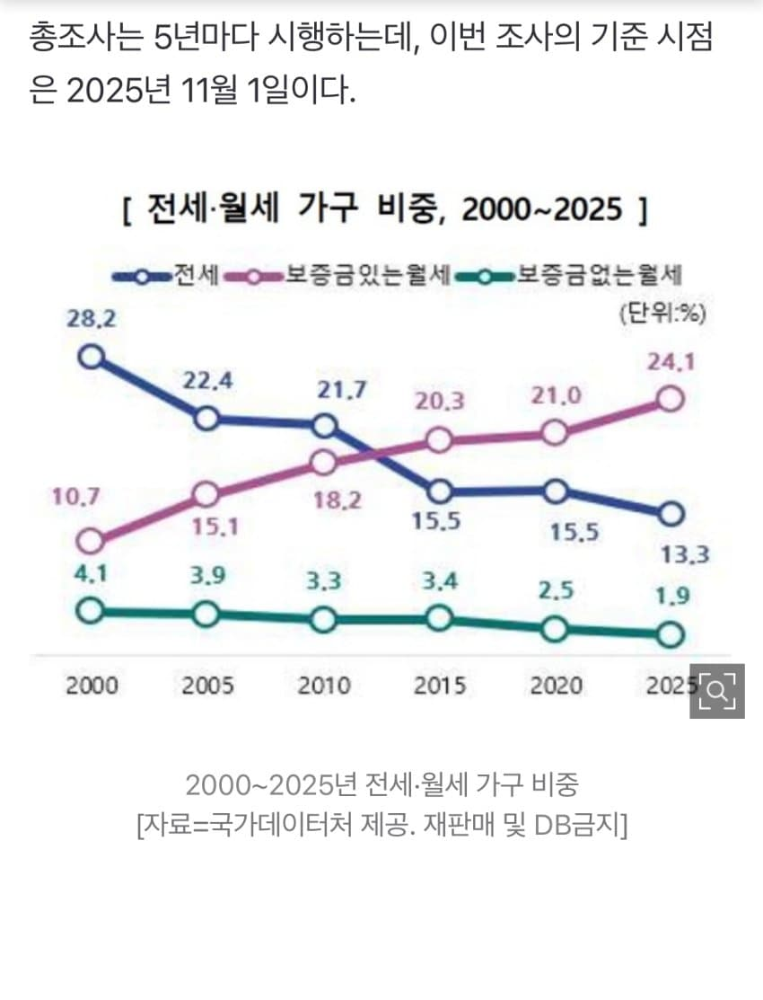
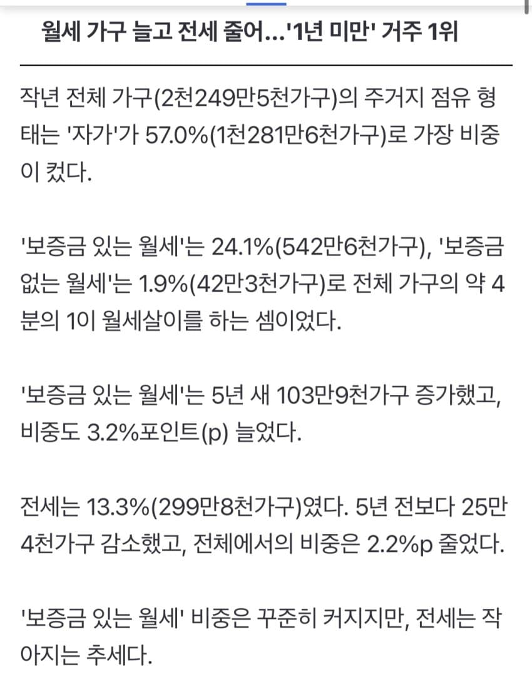
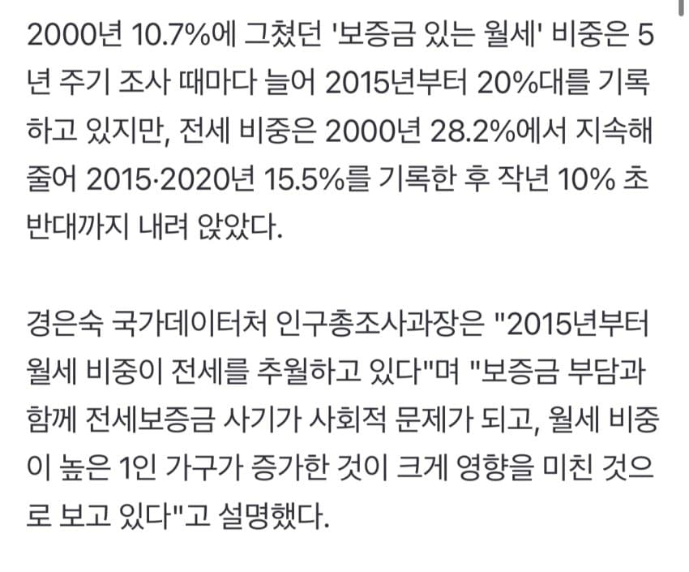
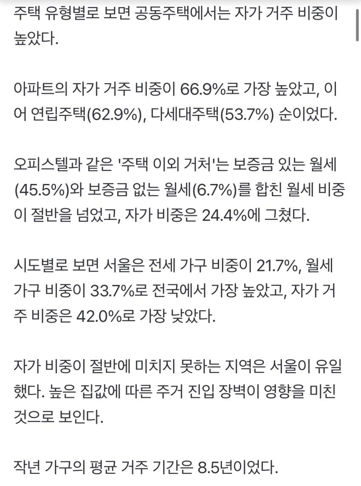
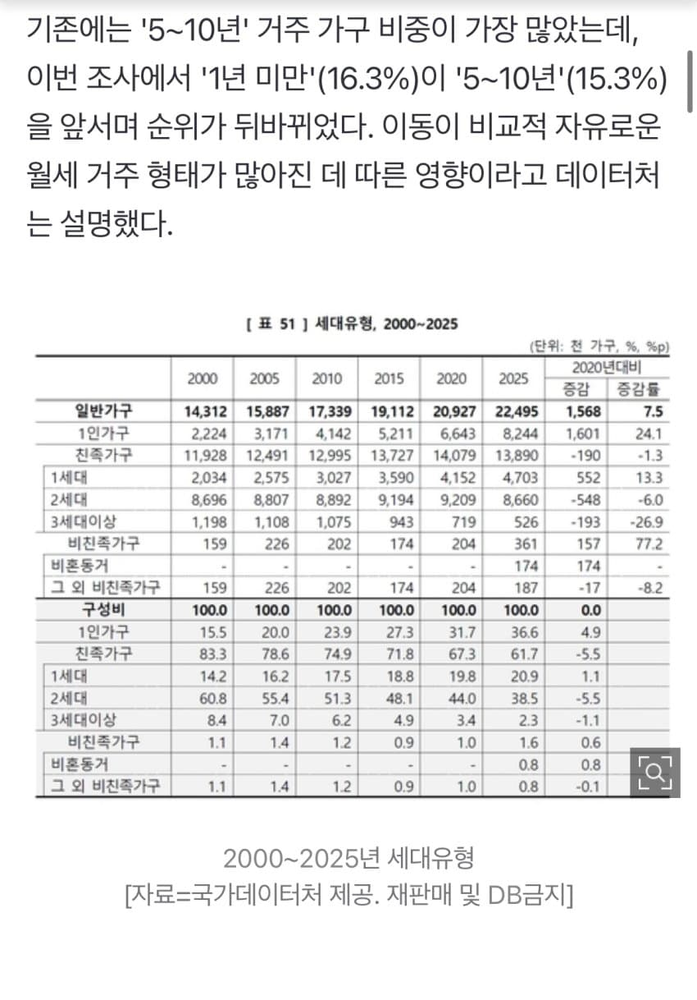
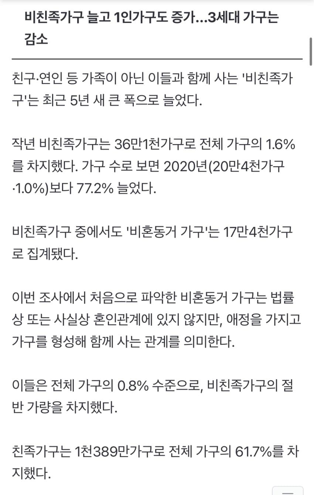
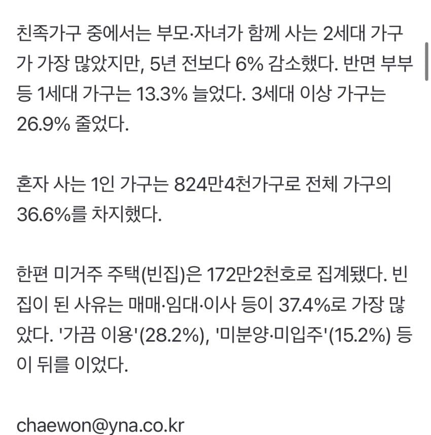
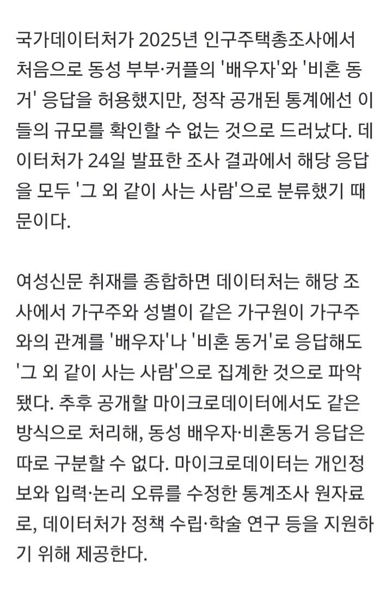
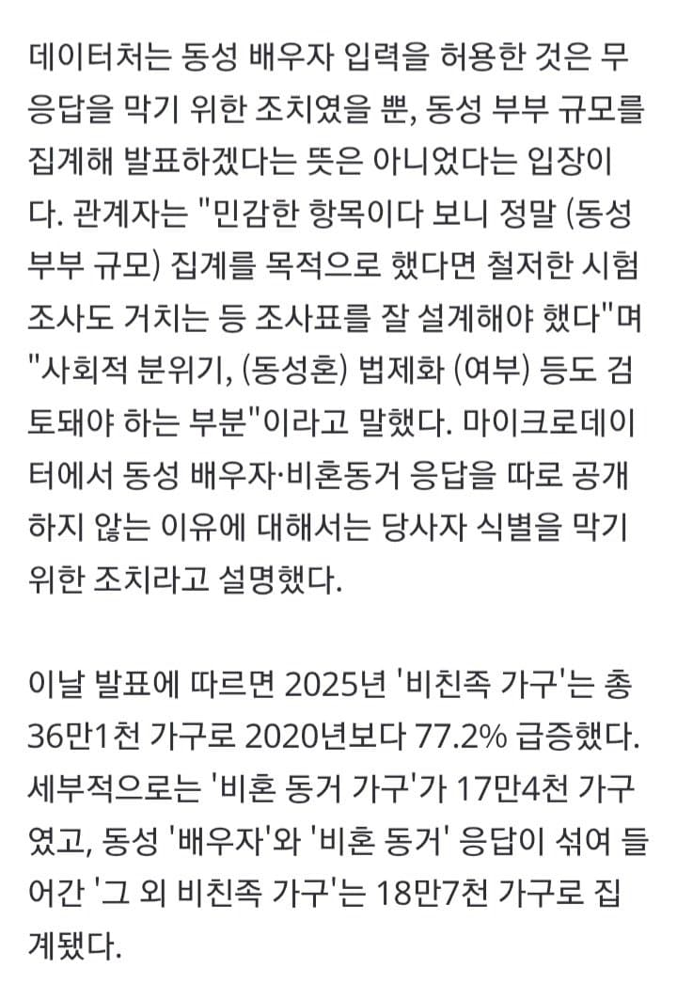

- 인구주택총조사, ‘동성 배우자’ 입력 열어놓고 집계는 ‘그 외 동거인’



일부 외부·대용량·응답 실패 미디어는 원본 링크로 남아 있습니다.







- 인구주택총조사, ‘동성 배우자’ 입력 열어놓고 집계는 ‘그 외 동거인’



댓글
수집 당시 댓글 103개
· ddd · 11.26 08:33:40
· ddd · 11.26 08:35:21
· 식물빌런 · 11.26 08:49:16
· 수비알 · 11.26 18:43:47
ㅇㅇ · 11.26 08:33:42
ㅇㅇ · 11.26 08:37:05
이재명
보유세
ㅇㅇ · 11.26 08:37:20
· ㅇㅇ · 11.26 08:38:08
· ㅇㅇ · 11.26 08:55:39
· ㅇㅇ · 11.26 09:11:19
ㅇㅇ · 11.26 08:38:00
비혼동거 =한녀혼 안해요
· 공정성장 · 11.26 08:58:43
히이잉 · 11.26 08:39:17
ㅇㅇ · 11.26 08:39:31
ㅇㅇ · 11.26 08:40:26
ㅇㅇ · 11.26 08:40:32
ㅇㅇ · 11.26 08:43:50
ㅇㅇ · 11.26 08:44:00
· ㅇㅇ · 11.26 11:55:24
ㅇㅇ · 11.26 08:49:07
멋진남자 · 11.26 08:49:17
ㅇㅇ · 11.26 08:52:30
ㅇㅇ · 11.26 08:53:18
ㅇㅇ · 11.26 08:53:59
· ㅇㅇ · 11.26 08:54:40
· ㅇㅇ · 11.26 09:11:42
· ㅇㅇ · 11.26 10:29:18
ㅇㅇ · 11.26 08:56:00
히이잉 · 11.26 09:01:17
ㅇㅇ · 11.26 09:01:48
· ㅇㅇ · 11.26 09:01:59
ㅇㅇ · 11.26 09:02:02
· ㅇㅇ · 11.26 09:23:29
· ㅇㅇ · 11.26 09:25:08
· ㅇㅇ · 11.26 10:01:53
ㅇㅇ · 11.26 09:05:10
ㅇㅇ · 11.26 09:06:50
ㅇㅇ · 11.26 09:08:40
ㅇㅇ · 11.26 09:14:05
ㅇㅇ · 11.26 09:15:35
ㅇㅇ · 11.26 09:16:31
ㅇㅇ · 11.26 09:17:13
· ㅇㅇ · 11.26 09:17:22
ㅇㅇ · 11.26 09:18:20
ㅇㅇ · 11.26 09:18:40
· ㅇㅇ · 11.26 09:24:56
ㅇㅇ · 11.26 09:22:47
ㅇㅇ · 11.26 09:23:52
ㅇㅇ · 11.26 09:26:01
ㅇㅇ · 11.26 09:40:33
· ㅇㅇ · 11.26 11:56:41
ㅇㅇ · 11.26 09:51:41
xopowo · 11.26 10:03:02
· xopowo · 11.26 10:06:28
· xopowo · 11.26 10:08:55
· 3232 · 11.26 13:15:58
· xopowo · 11.26 13:23:44
· ㅇㅇ · 11.26 13:53:17
· xopowo · 11.26 13:54:55
히이잉 · 11.26 10:17:18
ㅇㅇ · 11.26 10:19:48
· ㅇ ㅇ · 11.26 11:45:00
ㅇㅇㅇ · 11.26 10:21:47
ㅇㅇ · 11.26 10:33:12
ㅇㅇ · 11.26 10:35:32
타이밍뒷통수한방 · 11.26 10:42:54
ㅇㅇ · 11.26 10:53:02
+_ · 11.26 10:57:20
00 · 11.26 11:08:27
ㅇㅇ · 11.26 11:11:37
ㅇㅇ · 11.26 11:22:22
ㅇㅇ · 11.26 11:56:00
ㅇㅇ · 11.26 12:05:46
ㅇㅇ · 11.26 12:13:56
화롯불 · 11.26 12:23:10
늅늅 · 11.26 12:31:08
ㅇㅇ · 11.26 12:33:04
ㅇㅇ · 11.26 13:41:05
ㅇㅇ · 11.26 13:48:06
00 · 11.26 14:11:27
ㅇㅇ · 11.26 14:18:34
ㅇㅇ · 11.26 14:27:13
ㅇㅇ · 11.26 14:44:08
ㅂㅈㄷㄱ · 11.26 14:54:45
ㅇㅇ · 11.26 15:08:08
ㅇㅇ · 11.26 15:16:09
ㅇㅇ · 11.26 15:39:36
ㅇㅇ · 11.26 16:33:26
ㅇㅇ · 11.26 16:36:11
ㅇㅇ · 11.26 16:53:42
· ㅇㅇ · 11.26 16:54:07
· 00 · 11.26 18:56:27
ㅇㅇ · 11.26 18:17:35
ㅇㅇ · 11.26 18:19:25
· ㅇㅇ · 11.26 18:19:32
ㅇㅇ · 11.26 18:58:33
ㅇㅇ · 11.26 19:02:34
ㅇㅇ · 11.26 20:27:29
양자인간 · 11.26 20:40:13
ㅇㅇ · 11.26 20:50:04
ㅇㅇ · 11.26 08:30:32
봇치쟝 · 11.26 08:31:09
ddd · 11.26 08:32:14